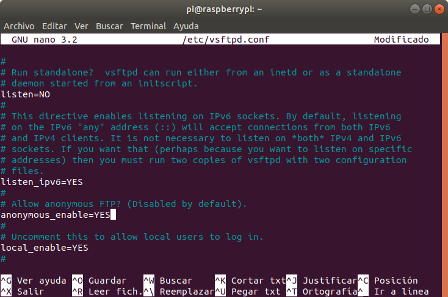
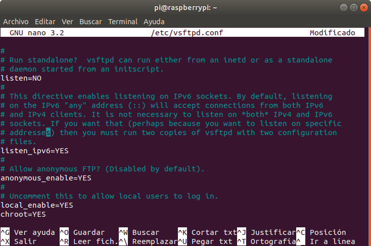
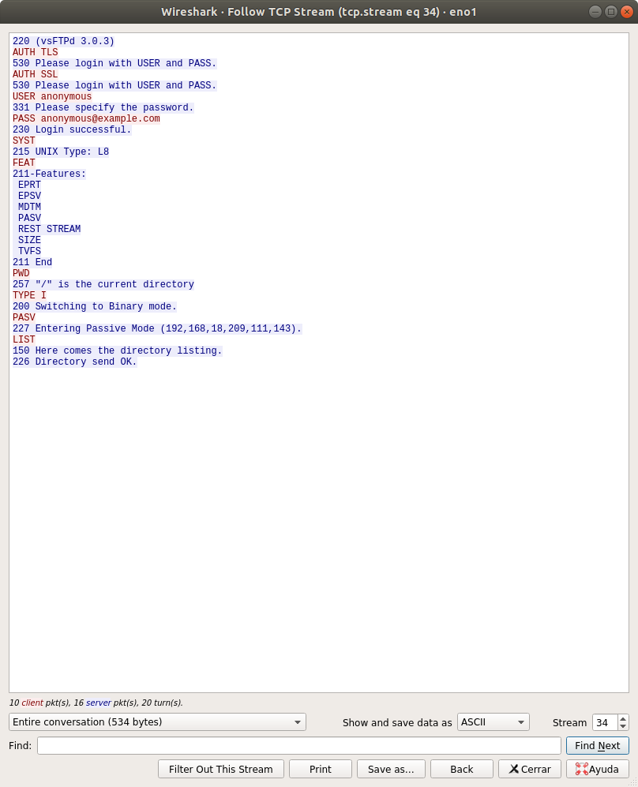
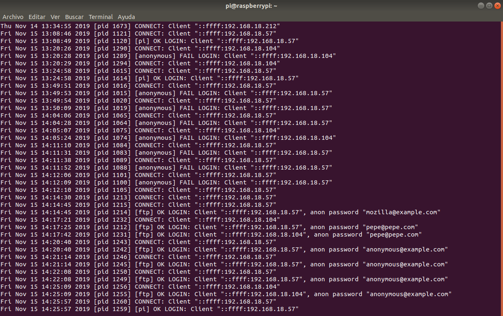
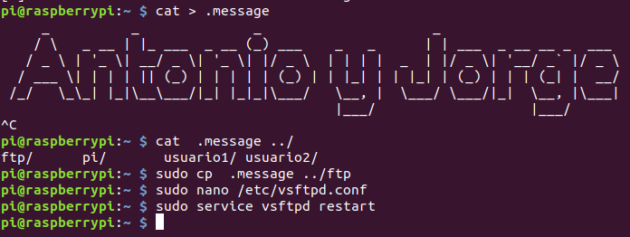
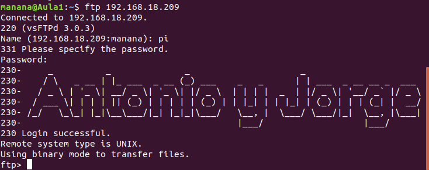
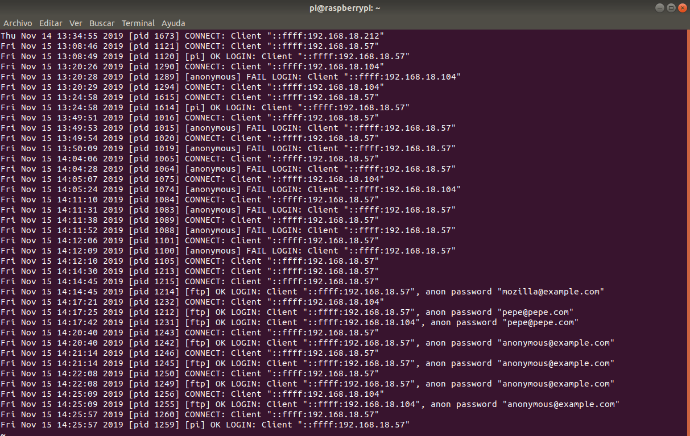
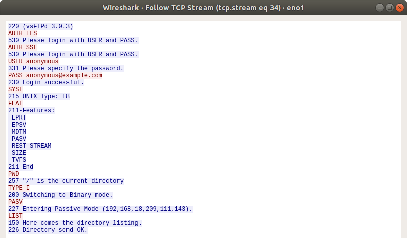
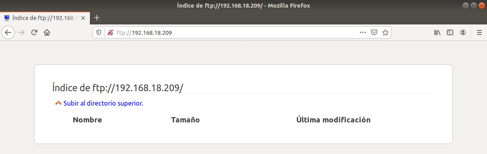
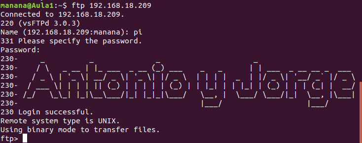

FTP
1. Que sea un servidor FTP anónimo para descargas

2. Que sea un servidor FTP para usuarios de sistema y que puedan tanto
descargar como subir archivos

3. Funcione en modo pasivo

4. Habilita los logs

Ya están habilitados, para verlos se usa el comando sudo less
/var/log/vsftpd.log
5. Cambia el mensaje de bienvenida


6. Logs de acceso al servidor FTP

7. Pantallazo que demuestre que ha cambiado el mensaje de bienvenida
8. Pantallazo del wireshark que demuestre que está funcionando en modo pasivo

9. Pantallazo de acceso en modo consola y en modo gráfico

